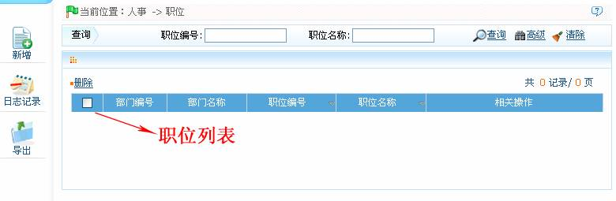
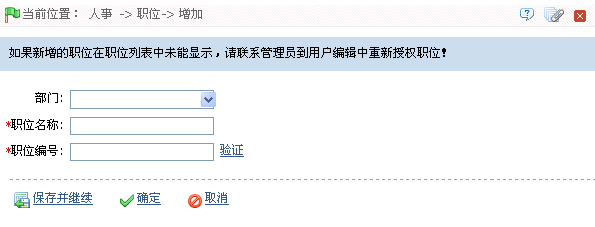

4.3 职位管理
在对公司人员进行设置之前，需要为公司添加相应的职位信息。职位管理主要功能包括新增职位和职位维护。
点击【人事】 【职位】，进入职位页面，如下图所示：
【职位】，进入职位页面，如下图所示：

1、新增职位
（1）、点击【人事】 【职位】
【职位】 【新增】，进入新增职位页面：
【新增】，进入新增职位页面：

根据需要设置各参数，设置方法如下：
部门：单击按钮，在弹出的部门下拉框中，选择该职位的所属部门。
职位名称：输入职位名称。
职位编号：输入职位编号（不可重复）。可单击【验证】查看输入的职位编号是否已存在。
（2）、设置完成后，单击【确定】按钮保存（若需继续添加，则单击【保存并继续】按钮），并返回职位页面，此时职位列表中将显示刚新增的职位信息。
2、职位维护
职位维护包括职位编辑和删除职位。
-
 编辑职位
编辑职位
如果公司有关职位信息发生变化，用户可使用编辑职位功能进行修改，如职位的名称、编号或（所属）部门。直接点击职位名称或点击职位所在行的“相关操作”下对应的【编辑】按钮，进入编辑界面进行修改。修改完成后，单击【确定】按钮保存。
-
删除职位
对于需要删除的职位，单击选中需删除的职位，然后单击“职位”列表左上方的【删除】按钮，或直接点击该职位所在行的“相关操作”下的【删除】按钮，进入删除职位的确认页面，单击【确定】按钮，确认并删除被选中的职位。